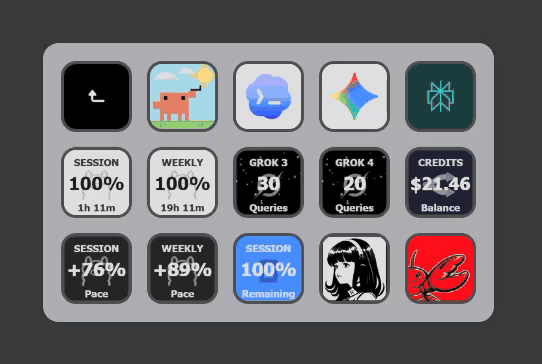
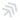
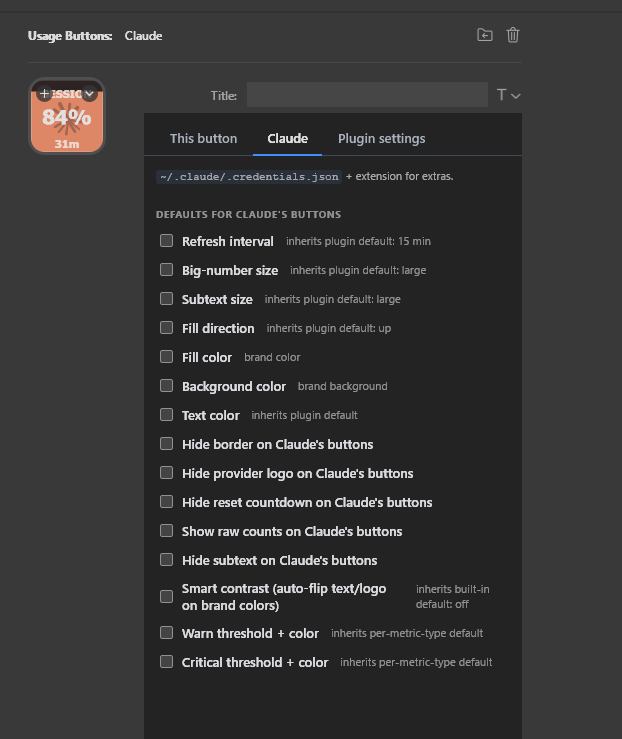

Your AI usage, live on every key.
Session %, weekly usage, credit balance, reset timers, per-model quotas — every AI coding stat becomes a Stream Deck button with a dynamic fill, so you can see your runway at a glance instead of pinging a dashboard.

What it does
Each metric becomes its own Stream Deck key. The background fills (or drains) in proportion to the current value, so you can read the whole dashboard without squinting.
Live dynamic icons
Every key renders as a compact SVG whose fill is driven by the current value — watch your session window drain in real time.
Smart rate-limit aware
Shared per-provider snapshot cache coalesces all button requests into one HTTP call, so adding six Claude keys still polls Anthropic once.
Watermark brand glyphs
Each button carries its provider's logo as a watermark so you can tell a Claude tile from a Codex tile at a glance, even when the meter is full.
Reset countdowns
Subvalue line shows exactly when each window resets — 2h 15m, 5d, 47s. Format adapts to the remaining duration.
Threshold alarms
Money metrics shift to warning and critical colors at configurable thresholds — sensible defaults included so you know when spending gets hot.
Pace tracking
Session and weekly pace metrics compare your actual usage against a linear burn rate — "+7%" means reserve, "-12%" means deficit.
Standalone native binary
Written in Go — single static binary with a low memory footprint. No runtime dependencies.
Supported providers
35 providers are live, spanning hosted AI assistants (Claude, Codex, Cursor, Copilot, Gemini, Grok), self-hosted gateways (OpenClaw, Hermes Agent, Ollama), portal accounts (Nous Research, Perplexity, Mistral, Kimi, MiniMax, Abacus, Alibaba, Augment, Amp, Droid, OpenCode, JetBrains AI, Antigravity, Kilo, Kiro), and direct API keys (OpenRouter, DeepSeek, Moonshot, Anthropic, OpenAI, Vertex AI, Synthetic, Warp, z.ai, Kimrel).

Amp Gemini Grok Nous Research Hermes Agent
OpenClaw Vertex AI JetBrains AI Kilo Kimi OpenRouter DeepSeek MoonshotConfiguration
Settings cascade three levels deep: per-button overrides per-provider overrides plugin-wide. Tweak just the one button, or change the default for every Claude tile, or set a global default — any level wins over the one beneath it.



Install
Two downloads — the Stream Deck plugin and, for browser-backed metrics, the Usage Buttons Helper browser extension.
1. Download the plugin
Grab the .streamDeckPlugin bundle for your OS from the latest release and double-click to install in Stream Deck. No admin prompts, no dependencies — it's a single static Go binary.
2. Install Usage Buttons Helper (optional — needed for browser-backed providers)
The Helper is a tiny Chrome extension that reads usage data from a narrow allowlist of logged-in provider sessions — cookies never leave the browser. The plugin only sees API response bodies. Providers that use OAuth, API keys, gcloud ADC, or local CLI/server data work without it.
- Download UsageButtons-Helper-unpacked.zip and unzip it anywhere.
- Open
chrome://extensionsand enable Developer mode (top-right). - Click Load unpacked and pick the unzipped folder.
That's it. Nothing to configure — the plugin picks the Helper up automatically. Works in Chrome, Edge, Brave, and Chromium.
3. Add a button
In Stream Deck, drag a provider (e.g. Claude, Codex, Cursor) onto any key, then pick a metric from the Property Inspector. Browser-sourced metrics (like Claude Balance or Cursor Auto usage) are clearly labeled and auto-disable when the Helper isn't connected, so nothing fires against Cloudflare until your browser is ready.
Build from source
Written in Go. Single static binary; no runtime deps beyond coder/websocket.
Clone, build, link
git clone https://github.com/anthonybaldwin/UsageButtons.git cd UsageButtons go build -o io.github.anthonybaldwin.UsageButtons.sdPlugin/bin/plugin-win.exe ./cmd/plugin/ go build -o io.github.anthonybaldwin.UsageButtons.sdPlugin/bin/usagebuttons-native-host-win.exe ./cmd/native-host/ ./scripts/install-dev.sh --restart
Cross-compilation works out of the box (GOOS/GOARCH).
The install-dev.sh script junctions the
plugin folder into Stream Deck's plugin directory so
rebuilds take effect without reinstalling. Then load
chrome-extension/ unpacked in Chrome for the
Helper side.
Something wrong?
Found a bug, buttons stuck on an error face, or a provider not returning the right numbers? Open an issue on GitHub — the more detail you include, the faster it gets fixed.
What to include
- OS & Stream Deck version — Windows/macOS, Stream Deck software version
- Plugin version — shown in the eyebrow at the top of this page, or in Stream Deck's plugin list
- Provider & metric — which provider (Claude, Codex, …) and which metric (session %, weekly %, …)
- What you expected vs. what happened
- Screenshot of the button — worth a thousand words when it's a rendering bug